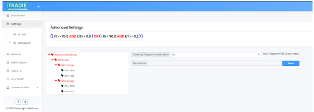
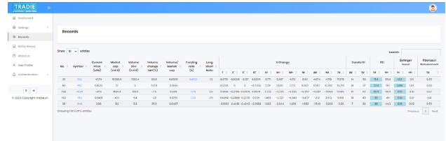

How should I customize my settings
If you trade using technical analysis, you can combine RSI and Bollinger Band in the Settings -> Advanced section as follows:
Go back to the "Record" page, and Tradie will calculate and list all cryptocurrencies in the "Overbought" and "Oversold" zones as you have set.
